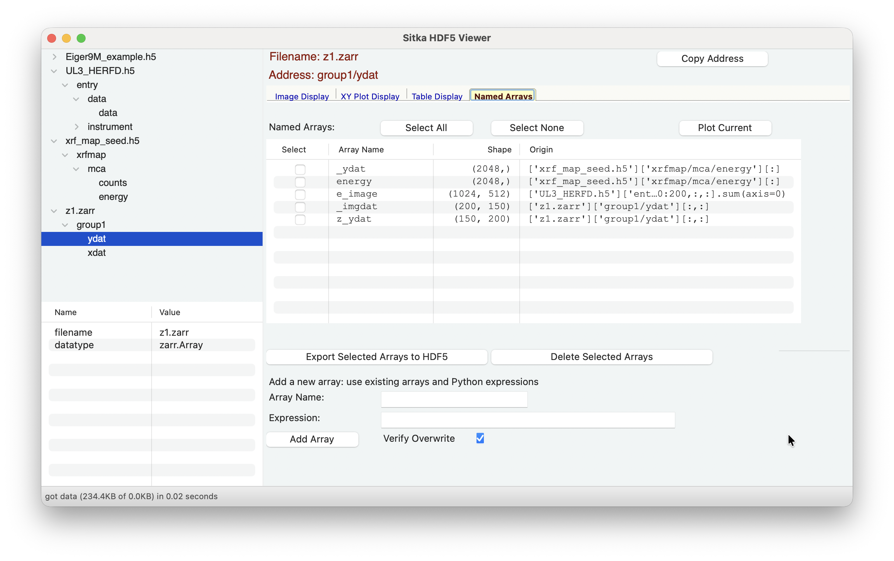

The Named Arrays Page¶
The Named Arrays page will contain a list of arrays saved in the Sitka session, and will look like
{kind=link}

Each of the named Array can be highlighted, or multiple arrays can be selected at a time. The Plot Current button will show the highlighted array (as a simple plot or image display).
Note that this list may contain arrays named _imgdat, _ydat, and _tabledat. These arrays are automatically written as the last data used by the Image Display page, the XY Display page and the Table Display page.
You can use the Export Selected Arrays to HDF5 to export the selected arrays to a simple HDF5 file (and so easily read into later Sitka sessions) or use Delete Selected Arrays to remove them.
At the bottom, you can also create a new array directly. Here you give a name (which must follow the valid conventions for a Python variable: A letter or underscore followed by any number of letters, numbers, or underscore), and an mathematical expression to evaluate for the array value. This uses an asteval Interpreter, and so uses Python conventions, the built-in math functions from the math module and numpy, and also contains the other named arrays. Example expressions would include
‘0.01 * arange(4096)’, maybe to set an X-axis for XYPlots
‘linspace(-2, 2, 501)’, as another form to set an X-axis for XYPlots
‘image1 - image2’ to take the difference of two images.
‘sin(ydat/10)’ you can use any trig functions from numpy.
‘gradient(ydat)/gradient(xdat)’ to take the derivative ‘dy/dx’.